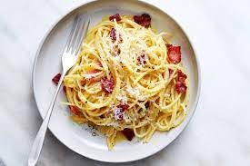

Pasta Carbonara Recipe
Ingredients:
- 8 oz (225g) spaghetti
- 2 large eggs
- 1 cup (100g) grated Pecorino Romano cheese
- 4 oz (115g) pancetta or guanciale, diced
- 2 cloves garlic, minced
- Salt and black pepper to taste
- Fresh parsley, chopped, for garnish
Instructions:
- Bring a large pot of salted water to a boil. Cook the spaghetti according to package instructions until al dente. Drain and set aside.
- In a bowl, whisk together the eggs and grated Pecorino Romano cheese. Season with a generous amount of black pepper.
- In a large skillet, cook the diced pancetta or guanciale over medium heat until crispy. Add the minced garlic and cook for an additional 1-2 minutes. Remove from heat.
- Add the cooked pasta to the skillet with the pancetta and garlic. Toss to combine.
- Pour the egg and cheese mixture over the pasta. Quickly toss everything together, ensuring the eggs don't scramble but create a creamy sauce.
- Season with salt to taste and garnish with chopped fresh parsley.